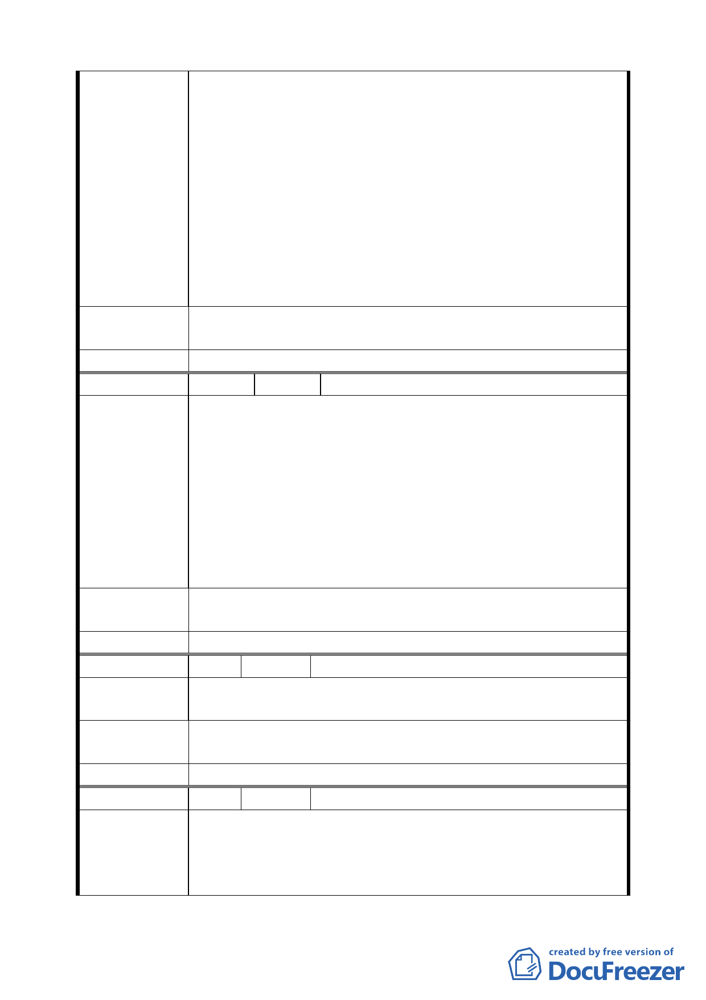

拜訪本人等，以各種威脅利誘之方 式遊說本人等參加
聯合開發，台北市政府一再騷擾、遊說之行為，已造成
本人等極大之心理負擔及困擾，原本政府之善心美意，
不僅蕩然無存，更不禁令人懷疑其間是否有不當之圖利
財團意圖，而非使本人等參與聯合開發不可，為免再受
侵擾，特委請 貴律師函告相關單位勿再為遊說、問卷
或其他任何之騷擾行為，且懇請繼續維持將本人等所有
之上開建物、基地列為，「不參加聯開」部分，設仍未
置理，本人等迫於無奈，將依法追究相關人員、機關民、
刑事及行政等一切責任，以維自身權益。」等情云云、
爰代函達如上。
建
議
辦
法
繼續維持將本人等所有之上開建物、基地列為，「不參加聯
開」部分。
委 員 會 決 議 同編號 1。
編 號 10 陳情人 臺北自來水事業處
一、 本處管有大同區橋北段 2 小段 680、680－1、680－2、
680－3、680－4 地號土地，現為北區營業分處辦公廳
舍，惟 680－1 地號土地因配合市政推動於 74 年 11 月
18 日逕為分割為「道路用地」，供延平北路 3 段 1 巷
陳情理由
住戶通行使用。
二、 現因參與臺北市政府捷運局辦理「新莊線大橋國小站
聯合開發區案」，為本處權益主張將 680－1 地號土地
恢復原使用分區用途，併 680 地號及 680－3 地號機關
用地使用，並於該開發案送都審會審議時併案辦理。
建
議
辦
法
將大同區橋北段 2 小段 680－1 地號土地恢復原使用分區用
途，併 680 地號及 680－3 地號機關用地使用。
委 員 會 決 議 同編號 1。
編 號 11 陳情人 陳健鎮（民權西路 225 巷 2 號 3 樓）
陳
情
理
由
一、商、住區可建容積不一，較無利原住宅區之住戶。
二、建商、地主分攤未經精算，是否確定分配比例。
建
議
辦
法
一、先將整個區域劃成商業區再行開發。
二、若建商與地主分配比例為 4：6 地主應更能接受。
委 員 會 決 議 同編號 1。
編 號 12 陳情人 陳生平（民權西路 225 巷 4 號、6 號）
一、台北市捷運局所提出之土地鑑價及分配辦法與一般市場
陳情理由
機制下地主建商合建的比例分配原則相差太大，幾乎等
同強取民眾財產以為公用。
二、本人現有土地為公司營業用樓房，購入時因考慮交通及
一〇